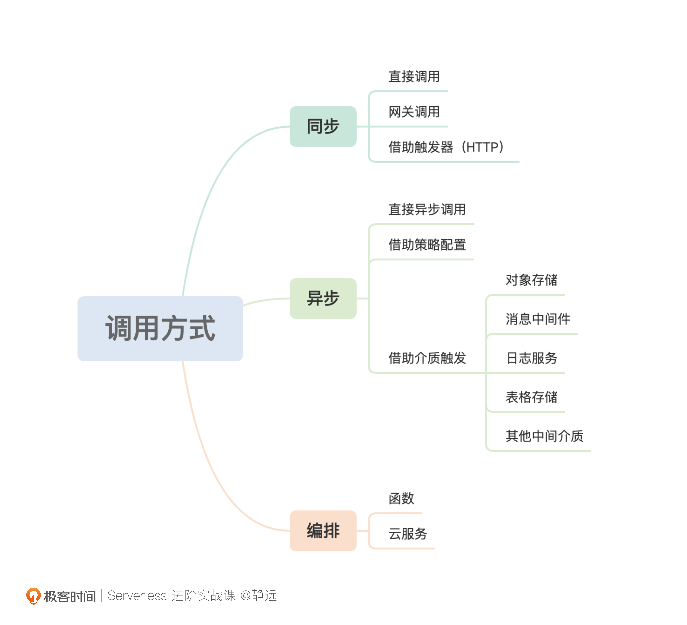
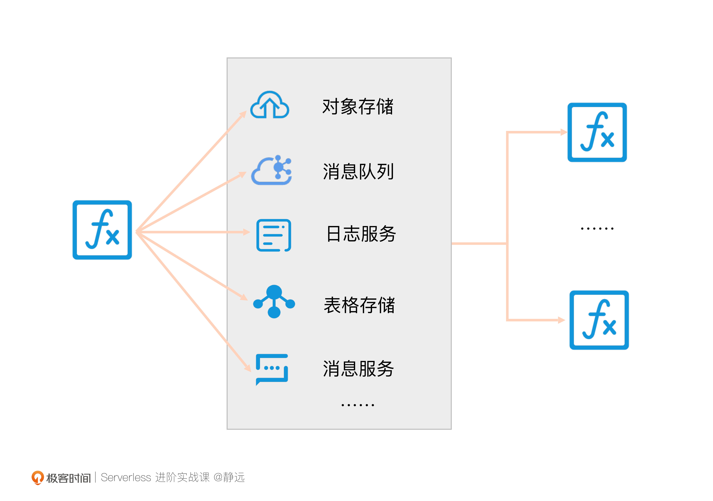
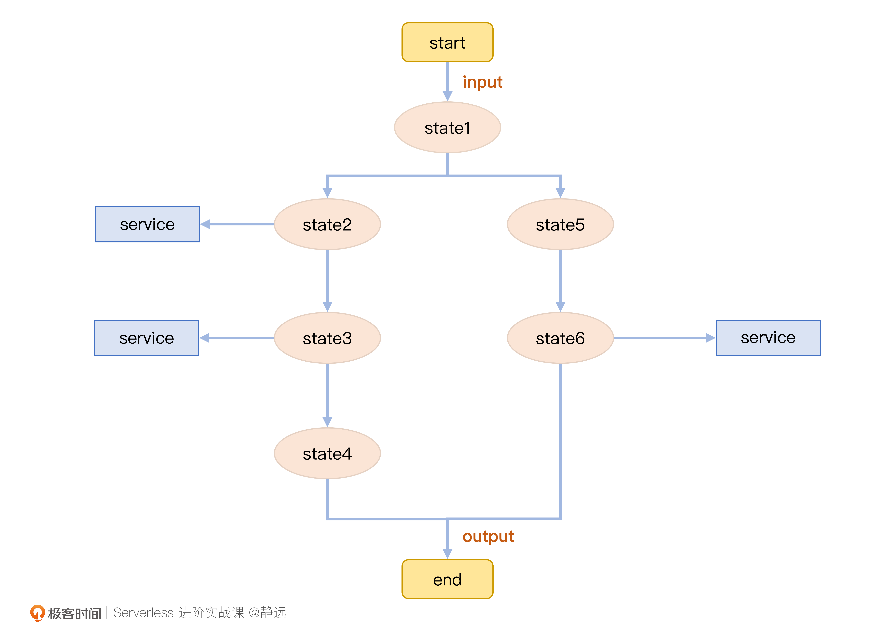

- 00 开篇词 Serverless是降本增效浪潮下的必然选择.md.html
- 00 思维构建 如何在新赛道下进阶Serverless能力？.md.html
- 01 生命周期：函数计算的基本流程是如何执行的？.md.html
- 02 触发器：如何构建事件源与函数计算的纽带？.md.html
- 03 高级属性：应对生产级别的应用，你需要掌握哪些技能？.md.html
- 04 冷启动：如何加快函数的第一次调用过程？.md.html
- 05 扩缩容：如何应对流量的波峰波谷？.md.html
- 06 流量转发：函数在不同情形下是如何执行的？.md.html
- 07 运行时（上）：不同语言形态下的函数在容器中是如何执行的？.md.html
- 08 运行时（下）：不同语言形态下的函数在容器中是如何执行的？.md.html
- 09 小试牛刀（一）：如何利用函数之间的调用解决业务问题？.md.html
- 10 小试牛刀（二）：如何突破VPC网络的速度限制？.md.html
- 11 WebIDE：如何让函数远离繁琐的本地开发模式？.md.html
- 12 编排：如何协调多任务的运行？.md.html
- 13 可观测（上）： 如何构建多维度视角下的Serverless监测体系？.md.html
- 14 可观测（下）： 如何构建多维度视角下的Serverless监测体系？.md.html
- 15 选型：不同阶段的数据应如何存储？.md.html
- 16 动手体验（一）：如何实现业务高效率地开发上线？.md.html
- 17 动手体验（二）：如何在云函数场景下实现一个有状态的服务？.md.html
- 18 实战指南：Serverless沙场老兵的一线使用经验.md.html
- 19 实战进阶（一）：Serverless “连接器” 的能力到底有多大？.md.html
- 20 实战进阶（二）：如何基于智能音箱开发一个BOT技能？.md.html
- 21 实战进阶（三）：传统的服务如何迁移到Serverless平台？.md.html
- 22 私有云：赛马时代的Serverless核心引擎谁能胜出？.md.html
- 23 实战进阶（四）：如何从0到1进阶一个开源引擎？.md.html
- 24 实战进阶（五）：如何从Serverless引擎蜕变成一个Serverless平台？.md.html
- 结束语 在实战中把握事物本质，不断革新.md.html
- 捐赠
09 小试牛刀（一）：如何利用函数之间的调用解决业务问题？
你好，我是静远。
在前面的课程中，我跟你分享了基于FaaS形态的Serverless核心技术，从用户和平台不同视角，学习了函数的初步使用方法，理解了其中的原理机制和设计思想。
虽然是基于FaaS的介绍，但不论是FaaS还是托管服务形态，在扩缩容、计量计费、流量调度等方面，Serverless的基础特征都是如出一辙的。FaaS只是基于这些基础特征之上一个具象化的产品体现而已。我相信，现在的你再去研究其他具体的Serverless的产品，也已经能够驾轻就熟了。
接下来，我们先不要急着深入学习它的拓展能力，先通过两节贴近一线实战的课程，分别从函数的调用和跨VPC的实现让你能一边用起来一边继续深入学习。函数的调用只要用到云上的资源，大部分都会涉及到VPC的调用，这两者放在一起来讲，一定能够加深你对这两者紧密关系的理解。
今天，我就和你先聊聊函数的调用。希望你能通过这节课，了解函数与函数之间是如何组装，函数与其他云资源是如何协作的，更能够判断在哪些场景适合用什么样的调用方式，以及这些调用需要注意些什么。
进行函数拆分调用的必要性
首先，我们来了解一下函数拆分调用的必要性。可以说，只要你有将函数用于实际业务的需求，单个函数就很难满足你的诉求。比如业务函数对公共函数的调用，函数对云资源的调用等。
另外，函数拆分管理也是有好处的，我们一个一个来说。
成本：云函数的收费由调用次数、公网流量、占用资源时间三部分组成，其中，最贵的就是占用资源时间。比如有的客户调用次数比较少，但费用也不低的原因，就在于他们的函数每次运行的耗时比较长。那么，你可以通过缩短超时时间、优化第三方的服务调用时效（如查询语句、对象池）等方式来降低一定的成本。
复用性：如果将所有功能写在一个函数体或者函数文件中，它沉淀为模板或者被再次复用的可能性就比较小，这也不符合我们组件化的思想。
性能：对于非串行的功能，拆分成多个函数可以提供并发性。因为每个函数都有自己的并发限制，另外，一旦某个并发的函数出现错误，拆分调用也不会像串行调用一样受到超时影响。
这三个好处，其实也是我们函数拆分调用的目的和方向，有了这个意识后，我们再来看在什么样的场景下，应该使用什么样的方式来实现。
实现方式
函数的调用从直观的实现上来看，分为同步、异步、编排。编排其实可以划到异步的大范围内，我这里把它单独拎出来，主要是因为它属于一个产品级的术语，具有调度和管理的意义。

这个思维导图，其实就是函数调用的思路，接下来，我们分别看下它们的具体实现。
同步
在同步模式下，主要使用的有直接调用、网关调用、借助触发器3种实现方法。这也是我们在轻量级应用场景下通常会使用的方式，比如BFF层的开发、对话式交互、活动运营页等。我们分别看下它们的特性。
- 直接调用
通常我们使用云厂商提供的SDK，通过调用指定的函数，就可以实现直接调用。我们以阿里云的fc-python-sdk为例，通过invoke_function调用，主要的代码如下所示：
import fc2
client = fc2.Client(
endpoint='<Your Endpoint>',
accessKeyID='<Your AccessKeyID>',
accessKeySecret='<Your AccessKeySecret>')
// 同步调用
client.invoke_function('service_name', 'function_name')
这种方法通常用于调用时间较少、需要及时返回处理结果、业务处理较为简单的场景。它和我们平时开发的微服务有几分相似，比如对调用结果的缓存、超时重试等，我们都可以将微服务上的经验迁移到函数计算中来使用。
但要注意的是，函数计算本身是有超时时间的，你还需要考虑超时带来的费用成本，按次付费是函数区别于微服务的一个重要特性。
- 网关调用
这个方法，就是通过网关的方式调用函数了。它同样与微服务类似，主要是通过API网关的方式来达到限流、验证、参数映射、域名映射等作用。如果是两个功能模块之间的调用，就可以选择网关调用了。不过，如果是自己业务内部的函数互调，那么采用上面所说的直接调用的方法即可。
- 借助触发器
我在做业务的时候，经常看到有的客户会在函数计算的平台上构建好触发器和函数之后，在自己的平台上写一个服务来通过HTTP触发器的方式使用函数计算。这个方法，一般用来做服务部分的Serverless化、函数检测等场景。
最后，在同步调用模式下，你还要注意调用延时和超时带来的级联反应，这会加重你额外的费用成本。
异步
在异步模式下，我们通常有直接的异步调用、借助平台异步策略配置、借助介质触发的方式。具体怎么理解呢？我来跟你一一梳理下。
- 直接异步调用
这种方式是比较好理解的，我们还是拿阿里云的函数计算调用方式来说明。它跟直接同步调用的区别，在于在多传一个参数值“x-fc-invocation-type”为“Async”：
// 异步调用函数。
client.invoke_function('service_name', 'function_name', headers = {'x-fc-invocation-type': 'Async'})
这种方式下，调用invoke_function之后，函数会立马返回，并不会关心被调函数的执行情况，而是由平台保证可靠地执行。
它同样和微服务的异步调用有些类似，除了可以增大并发之外，还可以尽可能地节省函数调用的成本。不过，它的局限性在于我们无法第一时间知道执行的结果，因此，我们最好在一些延时不敏感、无需等待返回给客户端结果的场景下使用。
- 异步策略配置
这种方式下，你无需进行额外的代码开发，这是平台厂商通常为了使得产品更具竞争力，让你快速实现对函数的处理结果、异常等方面的再次处理而提供的能力。所以我在这里把它称为“策略配置”。
你可以通过设置诸如“最大重试次数”、“消息存活时间”这些条件来保证请求的可靠处理。同时，也可以通过“成功”或“失败”调用其他云函数或者已经集成的云函数、消息队列等，进一步丰富处理能力。通过云厂商的这种配置，我们也可以快速地搭建一个类似微服务异步处理架构的能力。
- 借助介质触发
这种方式其实就是巧妙地运用函数与云服务的集成来处理，同时，也将函数计算由原来的被动触发模式，转变成了“生产者模式”，可以说真正体现出了函数计算胶水语言的特性。
如下面的示意图所示。我们通常可以看云厂商集成了多少的云服务，也就是说它集成了多少触发器。之后，你就可以通过函数的方式来调用它（如HTTP触发器的异步触发方式），也可以通过云服务开放的API接口存储下来，再由其配套的事件触发方式触发目标函数就行。我们以对象存储举例，你可以将文件存储到一个bucket下，然后进行触发操作。

这样的方式，可以极大地降低你的运维成本，让你更专注于业务逻辑的处理，这一点也正是Serverless的精髓所在，也是不同于微服务的一大特点。
我们都知道，微服务的治理其实已经很不简单了。随着函数粒度越来越低，虽然灵活性提升了，但如果是复杂的场景，即使有这些同步和异步的方式，一旦处理逻辑比较多，链路比较长，等待时间不确定，亦或者需要回滚操作等，那么上述这两大操作模式（同步、异步）也就显得有点力不从心了。
下面，我就给你在介绍一个Serverless的杀手锏工具——工作流。我们可以把上面的方式看成是“函数形态下的P2P操作”，而工作流，就可以看作是“函数下的Kubernetes”。
编排
如下图所示，我们可以发现，函数（或者服务）之间，不再以主动或者被动的触发方式来交互，而是通过预制好的步骤来进行，这些步骤通常通过JSON或者YAML的格式定义好函数之间的协作关系存在。

我们通常把它称为Serverless工作流，它可以让你通过顺序、分支、并行的方式来协调一个或多个分布式任务，这些任务不仅包括函数，还可以是服务和应用的形式，并且通过平台提供的状态跟踪、日志记录和异常重试逻辑，将你从繁琐的工作中解脱出来，享受全托管的服务能力。
那么它能具体适用于什么样的场景呢？我来跟你分别来介绍一下。
- 长流程的场景：假如你的业务流程耗时很长，为了确保流程的执行结束和状态追踪，就可以使用工作流编排的方式；
- 事务型业务流程：比如我们常见的电商订单流程，涉及到预留库存、下单结算、配送、退款等有状态的流程，通过Serverless工作流，就可以提供这种长流程分布式的事务保证；
- 并发型业务流程：这里一般指的是执行时间长、并发量高的大规模计算场景，比如机器训练，需要先拆解小文件计算，再聚合处理；
- 需要状态全链路监测的场景：由于云厂商开发的工作流配备了可观测、执行记录等可视化功能，那么对链路长，需要监测的业务，通过Serverless工作流就可以便捷地查看状态、执行记录、定位故障。
总的来说，Serverless工作流适合用于解决复杂的、执行流程长、有状态的、多步骤的、并发聚合的业务流程。其实，当你用同步、异步的常规方法不太好处理的时候，就可以想想，你的业务是否可以通过编排的方式来解决。关于编排的核心技术实现，我也会在第二模块中跟你细聊。
注意要点
了解完常用的函数之间的调用方法和使用场景之后，相信你已经可以通过这些思路，驾轻就熟地去云厂商的平台上体验一番了。如果你是一个Serverless平台的新人，那么相信你对你的平台已经具备或者应该具备的能力也心中有谱了。下面，我再提供给你几点使用过程中的注意事项，避免踩坑。
首先，安全性问题。云厂商通过在代码级别加密的方式确保代码安全，运行时的隔离机制确保执行安全，访问时的鉴权验证确保资源请求的安全。那么，你需要做的，就是在使用的时候确保你的访问密钥是安全的。除此之外，在设置诸如HTTP触发器之类的服务可选项时，一定记得在生产环境使用身份鉴权验证机制。
其次，监控报警问题。你可以通过我在热启动部分中讲到的预热方法来访问你的重要函数，确保函数能被正常访问，如果不能正常访问，你可以沿用你原来微服务的治理机制方法来报警，或者可以直接使用云厂商的报警策略机制，此时你可能需要支付一定的额外费用，这个依据不同的平台而定。
最后，容错问题。如果你的下游服务出现问题（如超时、访问不通、超限等），不仅会影响你本身的函数使用，还会增加额外的耗时费用。所以，你可以针对性地增加一些缓存方式来避免无状态请求的调用。其余的方法，其实跟微服务就差不多了，比如熔断机制、降级机制等，并结合上面的报警来处理。其实，在合适的场景选择异步的方式来处理，本身就是一种高容错、低耦合的方式。
小结
最后，我来小结一下今天的内容。这节课，我分别从函数拆分调用的必要性和实现方式上，跟你介绍了如何利用函数之间的调用来解决日常的业务需要。要注意的是，函数计算的使用也是需要从成本、复用性和性能方面来权衡的，以便于获得最佳的ROI。
在实现方式上面，我把函数的调用分为同步、异步以及编排的处理方式。其中，同步适合及时响应、执行较短等场景。在大部分时候，我还是推荐你使用异步的处理方式来确保业务的稳定可靠和服务的解耦。
而针对复杂的业务场景、需要支持长时间、有状态、多步骤的执行流程，这里，我推荐你使用Serverless工作流。
当然，我更希望你能够灵活地运用今天学习过的调用方法，在前面学习单函数的基础上，能够通过“积木的方式”实现更复杂的业务逻辑。
课后练习
好了，这节课到这里也就结束了，最后我给你留了一个小练习。
想一想，通过函数调用的方式实现音视频的处理，针对不同的场景，都有哪些方法？你可以选择一家云厂商先练习练习，体验一下函数计算、Serverless的便捷之处。
我会在第二模块的动手体验中跟你讲解实现它的多重途径和详细方法。感谢你的阅读，也欢迎你把这篇文章分享给更多的朋友一起交流学习。
© 2019 - 2023 Liangliang Lee. Powered by gin and hexo-theme-book.